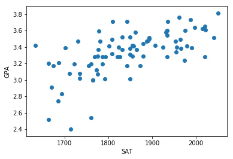
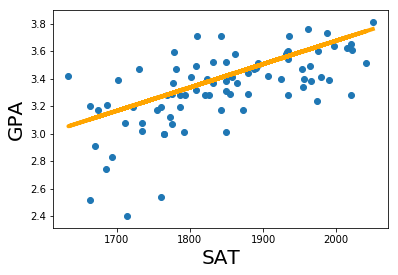
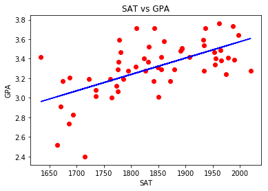
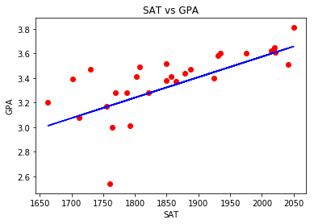

This will be the first blog about machine learning and I plan to write about more complex models in the future. Stay tuned! But for right now, let’s focus on linear regression.
In this blog post, I want to focus on the concept of linear regression and mainly on the implementation of it in Python. Linear regression is a statistical model that examines the linear relationship between two (Simple Linear Regression ) ,a dependent variable and independent variable(s). Linear relationship basically means that when one (or more) independent variables increases (or decreases), the dependent variable increases (or decreases) too.
A linear relationship can be positive (independent variable goes up, dependent variable goes up).
To give a practical example, we consider a dataset with 84 observations from different student with a single independent variable “SAT” and dependent variable “GPA”. What we need to find out is if there is any sort of correlation between these two variables. This is one of those examples where we know beforehand that there is some sort of correlation, as we know that experiece matters, but there is always a range within which this relation fluctuates, and there is no certan rules to establish the exact correlation. In this case we will be creating a simple model which will tell us what is the best fitting line for this relationship.
\newcounter{MarkdownId}
\newenvironment{markdown}% {\stepcounter{MarkdownId}% \VerbatimEnvironment\begin{VerbatimOut}{tmp\theMarkdownId.markdown}% }% {\end{VerbatimOut}% \immediate\write18{pandoc .latex\string\tmp\theMarkdownId.markdown -t latex -o .latex\string\tmp\theMarkdownId.tex}% \input{.latex\string\tmp\theMarkdownId.tex}% }
\begin{document}
\begin{markdown}
\end{markdown}
\begin{markdown}
\end{markdown}
\end{document} \documentclass{article} \begin{document}
\end{document}
$$ \begin{eqnarray} Dependent &\ variable \Rightarrow & Y_i \ Constant \Rightarrow & \beta_0 \ Coefficient \Rightarrow & \beta_1 \ Independent &\ variable \Rightarrow & X_i \ \end{eqnarray} $$
import pandas as pd
import numpy as np
import matplotlib.pyplot as plt
import statsmodels.api as sm
%matplotlib inline
sat_gpa_csv = 'datasets/sat_gpa.csv'
sat_gpa = pd.read_csv(sat_gpa_csv)
sat_gpa.head()
| SAT | GPA | |
|---|---|---|
| 0 | 1714 | 2.40 |
| 1 | 1664 | 2.52 |
| 2 | 1760 | 2.54 |
| 3 | 1685 | 2.74 |
| 4 | 1693 | 2.83 |
sat_gpa.describe()
| SAT | GPA | |
|---|---|---|
| count | 84.000000 | 84.000000 |
| mean | 1845.273810 | 3.330238 |
| std | 104.530661 | 0.271617 |
| min | 1634.000000 | 2.400000 |
| 25% | 1772.000000 | 3.190000 |
| 50% | 1846.000000 | 3.380000 |
| 75% | 1934.000000 | 3.502500 |
| max | 2050.000000 | 3.810000 |
Before we finish this introduction, we want to get this out of the way. Each time we create a regression, it should be meaningful. Why would we predict GPA with SAT? Well, the SAT is considered one of the best estimators of intellectual capacity and capability.
On average, if you did well on your SAT, you will do well in college and at the workplace. Furthermore, almost all colleges across the USA are using the SAT as a proxy for admission.
y = sat_gpa['GPA']
x1 = sat_gpa['SAT']
Using Simple plt Function
plt.scatter(x1,y)
plt.xlabel('SAT')
plt.ylabel('GPA')
plt.show()

x = sm.add_constant(x1)
results = sm.OLS(y,x).fit()
results.summary()
/Users/mousa/anaconda3/lib/python3.7/site-packages/numpy/core/fromnumeric.py:2389: FutureWarning: Method .ptp is deprecated and will be removed in a future version. Use numpy.ptp instead.
return ptp(axis=axis, out=out, **kwargs)
| Dep. Variable: | GPA | R-squared: | 0.406 |
|---|---|---|---|
| Model: | OLS | Adj. R-squared: | 0.399 |
| Method: | Least Squares | F-statistic: | 56.05 |
| Date: | Mon, 17 Jun 2019 | Prob (F-statistic): | 7.20e-11 |
| Time: | 09:37:07 | Log-Likelihood: | 12.672 |
| No. Observations: | 84 | AIC: | -21.34 |
| Df Residuals: | 82 | BIC: | -16.48 |
| Df Model: | 1 | ||
| Covariance Type: | nonrobust |
| coef | std err | t | P>|t| | [0.025 | 0.975] | |
|---|---|---|---|---|---|---|
| const | 0.2750 | 0.409 | 0.673 | 0.503 | -0.538 | 1.088 |
| SAT | 0.0017 | 0.000 | 7.487 | 0.000 | 0.001 | 0.002 |
| Omnibus: | 12.839 | Durbin-Watson: | 0.950 |
|---|---|---|---|
| Prob(Omnibus): | 0.002 | Jarque-Bera (JB): | 16.155 |
| Skew: | -0.722 | Prob(JB): | 0.000310 |
| Kurtosis: | 4.590 | Cond. No. | 3.29e+04 |
Warnings:
[1] Standard Errors assume that the covariance matrix of the errors is correctly specified.
[2] The condition number is large, 3.29e+04. This might indicate that there are
strong multicollinearity or other numerical problems.
Therefore,
plt.scatter(x1,y)
yhat = 0.0017*x1 + 0.275
fig = plt.plot(x1,yhat, lw=4, c='orange', label = 'regression line')
plt.xlabel('SAT', fontsize = 20)
plt.ylabel('GPA', fontsize = 20)
plt.show()

To perfor a simple linear regression in Python the fist step is to preprocess the data in order to split our data. Then, what we need to do is to import from sklearn library the linear model sub library, and with the linear regression class we are going to create an object called REGRESSOR using the FIT method.
The next step is to predict the test set results in a vector of predictions of dependent variables y_pred, by using the method PREDICT.
Last step is to visualise our outputs in order to interpret the results. Here we use a function of PYPLOT called SCATTER to make a scatter plot of points, and a plot of the regressor line with the function PLOT, for both the training and test sets
dataset= sat_gpa
X = dataset.iloc[: , :-1].values
Y = dataset.iloc[: , :1].values
# Splitting the dataset into the Training set and Test Set
from sklearn.model_selection import train_test_split
X_train, X_test, y_train, y_test = train_test_split(X, y, test_size = 1/3, random_state = 0)
# Fitting Simple Linear Regression model to the training set
from sklearn.linear_model import LinearRegression
regressor = LinearRegression()
regressor.fit(X_train, y_train)
# Predicting the Test set results
y_pred = regressor.predict(X_test)
# Visualising the Training set resuts
plt.scatter(X_train, y_train, color = 'red')
plt.plot(X_train, regressor.predict(X_train), color = 'blue')
plt.title('SAT vs GPA')
plt.xlabel('SAT')
plt.ylabel('GPA')
plt.show()
# Visualising the Test set resuts
plt.scatter(X_test, y_test, color = 'red')
plt.plot(X_test, regressor.predict(X_test), color = 'blue')
plt.title('SAT vs GPA')
plt.xlabel('SAT')
plt.ylabel('GPA')
plt.show()


Observing all data points, we can see that there is a strong relationship between SAT and GPA. In general, the higher the SAT of a student, the higher their GPA.